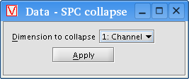

The dimensional collapse transform allows you to select a dimensional axis to convert into a series of range components (see the Colors dialog box topic for an overview of range components). To do it, first import your dataset as described in the Importing a dataset from disk topic. Select your data from the list, then click the "Add >" button and choose "Dimensional collapse" from the popup menu.
Choose a name for the dimensional collapse, and VisBio will create another data object, a child of your original dataset, that represents the collapsed data. To alter which dimension is collapsed into range components, select the collapsed data object and click the "Edit" button. A window similar to this one will appear:

After choosing a dimensional axis to collapse from the pulldown menu, click the "Apply" button to lock in your changes. VisBio will recompute thumbnails as necessary for the new collapse parameters.
For example, say you have imported a 4D dataset with 85 time points and 33 focal planes of color images (three range components: Red, Green and Blue). If you collapse the time dimension, the resultant data object will have 33 focal planes, with 255 (85 x 3) range components.
The dimensional collapse transform is most often used in conjunction with
spectral mappings (see the Spectral mappings topic
for more information).